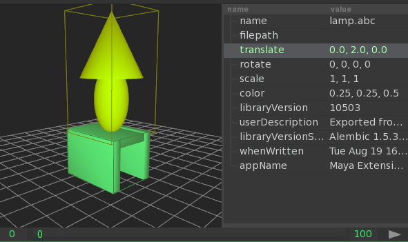
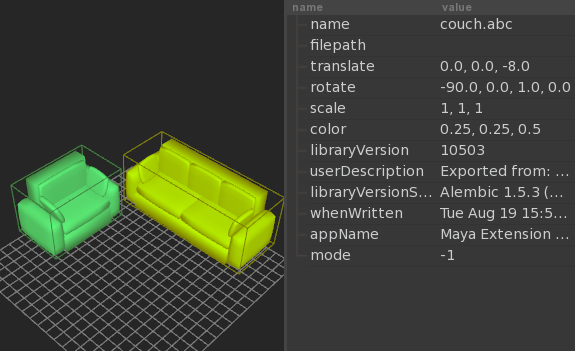

Hierarchical Assets Example¶
This doc attempts to demonstrate how to construct a simple heirarchical asset, with instances and contextual overrides. We’ll create a simple environment asset composed of smaller subassets. In this case, a living room with a couch, coffee table, and side tables with lamps.
Step 1¶
>>> from abcview.io import Session
>>> s = Session()
>>> s.add_file("lamp.abc")
>>> s.add_file("sidetable.abc")
Note: this is the same as loading both of these abc files into AbcView
$ abcview lamp.abc sidetable.abc
Translate the lamp scene up on the y-axis and save the session
>>> s.items[0].translate = (0, 2, 0)
>>> s.save("step1.io")
Load the session file into AbcView
$ abcview step1.io
Note: you can also move the lamp on top of the table using the properties widget: (ctrl+shift+p or Widgets->Properties), select the lamp, then double-click the translate value and enter 0, 2, 0 and hit enter.
Step 2¶
Load an instance of the couch and loveseat assets into a new session, and translate them
>>> s = Session()
>>> s.add_file("couch.abc")
>>> s.add_file("loveseat.abc")
>>> s.items[0].translate = (0, 0, -8)
>>> s.items[0].rotate = (-90, 0, 1, 0)
>>> s.items[1].translate = (-8, 0, 0)
>>> s.items[1].rotate = (-90, 0, 1, 0)
>>> s.save("step2.io")
It should look like this
Step 3¶
Now let’s load two instances of the step1.io compound asset created in Step 1, and give them new names
>>> s = Session()
>>> s.add_file("step1.io")
>>> s.add_file("step1.io")
>>> s.items[0].name = "LAMP1"
>>> s.items[1].name = "LAMP2"
>>> s.save("step3.io")
Loading step3.io into AbcView it should look like this

Step 4¶
Instance the step2.io asset, the step3.io asset and the coffee table asset
>>> s = Session()
>>> s.add_file("step2.io")
>>> s.add_file("step3.io")
>>> s.add_file("coffeetable.abc")
Then change the position of the coffee table
>>> s.items[2].rotate = (90, 0, 1, 0)
Now, let’s move lamps next to the couch in this scene by settings its translate property using contextual overrides, and save the scene
>>> s.items[1].items[0].add_override("translate", (-9.0, 0.0, -8.0))
>>> s.items[1].items[1].add_override("translate", (9.0, 0.0, -8.0))
>>> s.save("step4.io")
You should have a scene that looks like this

Step 5¶
Now go back to the step1.io asset and change the height of the lamp, and it should get updated in any compound assets that reference it
>>> s = Session("step1.io")
>>> s.items[0].scale = (1, 0.7, 1)
>>> s.save()
Re-open the step4.io asset and you should see both lamps are now shorter

These are just simple examples, but any property, TRS values or arbitrary attributes, can have a contextual override in referencing session files.